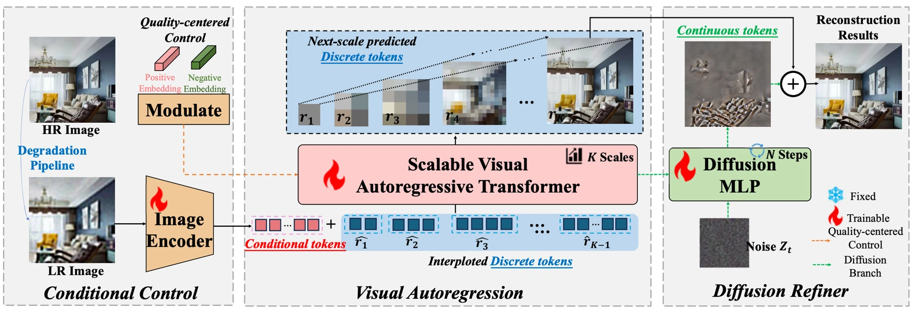
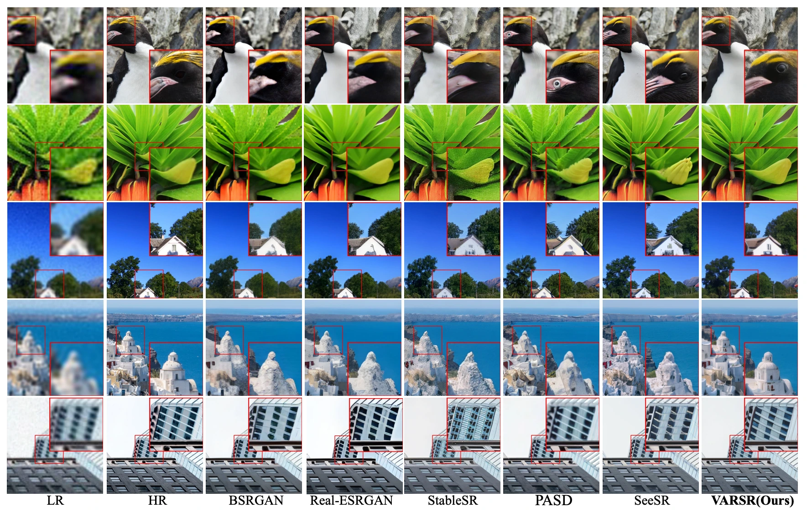

Image restoration must balance fidelity, realism, and computational cost. VARSR approaches this problem through next-scale prediction: an autoregressive model progressively constructs a higher-resolution representation.
图像恢复需要平衡保真度、真实感与计算成本。VARSR 采用下一尺度预测，让自回归模型逐步构建更高分辨率的表示。
Rather than predict every fine detail at once, the model first establishes a coarse representation and uses it to condition the next level of detail.
模型不一次预测所有精细细节，而是先建立粗尺度表示，再据此预测下一层细节。
Reconstructing an image one scale at a time逐个尺度重建图像
Low-resolution information enters through prefix tokens. Scale-aligned rotary positional encodings preserve spatial relationships across resolutions, while a diffusion refiner addresses quantization residuals for pixel-level reconstruction. Image-based classifier-free guidance helps control realism.
低分辨率图像信息通过前缀词元输入。尺度对齐的旋转位置编码保持跨分辨率的空间关系，扩散细化器处理量化残差以改善像素级重建，基于图像的无分类器引导则帮助控制生成的真实感。
The low-resolution image is not merely a starting canvas. Its prefix tokens remain available to the autoregressive model as it predicts successive scales, helping maintain the relationship between input content and generated detail. Scale-aligned positional encoding makes locations at different resolutions correspond. A continuous diffusion refiner then handles information that a discrete tokenizer cannot represent exactly, separating the problem of semantic structure from the correction of quantization residuals.
低分辨率图像不仅是初始画布。逐尺度预测时，模型始终可访问它的前缀 token，以维持输入内容与生成细节的联系；尺度对齐位置编码则建立不同分辨率下的位置对应。连续扩散细化器进一步处理离散 tokenizer 无法精确表达的信息，将语义结构建模与量化残差修正分开。
{kind=link}

Comparing fidelity, realism and inference cost比较保真度、真实感与推理成本
The experiments combine reference-based metrics, no-reference quality scores, visual comparisons and human preference. Ablations compare prefix-token conditioning with alternative ways of injecting the low-resolution image. Other analyses examine positional encoding and the residual refiner. This decomposition matters because a visually impressive result could otherwise come from the diffusion refiner rather than from the autoregressive restoration mechanism itself.
实验结合全参考指标、无参考质量指标、视觉对比和人类偏好。消融比较前缀 token 与其他低分辨率条件注入方式，并分析位置编码和残差细化器的作用。分开检验这些组件很重要，否则最终观感的改善可能来自扩散细化器，而非自回归恢复机制本身。
What next-scale prediction delivers下一尺度预测带来的结果
In the reported 50-image user study on DRealSR and RealSR, VARSR receives 55.2% of selections among six methods. The efficiency comparison reports 0.59 seconds per image, about 10.1% of DiffBIR’s runtime in that setup. Together with perceptual metrics, these results support next-scale prediction as a practical restoration route; latency remains dependent on hardware and resolution.
在 DRealSR 与 RealSR 的 50 张图像用户研究中，VARSR 在六种方法中获得 55.2% 的选择率。效率实验报告单图耗时 0.59 秒，约为相同设置下 DiffBIR 的 10.1%。结合感知指标，这支持了逐尺度预测用于图像恢复的可行性；实际耗时仍取决于硬件与分辨率。
{kind=link}

Choosing the right representation for restoration为复原选择合适的表示
The paper reframes super-resolution as a sequence of scale-level decisions. Coarse structure is established before finer details, while the input remains an explicit condition throughout. That is a useful design principle beyond a particular benchmark. It does not remove the need to check hallucinated textures, and efficiency comparisons should retain the implementation and image-size assumptions used in the study.
论文把超分辨率重新组织为逐尺度决策：先建立粗结构，再补充细节，并始终保留输入条件。这一设计原则具有超出单个基准的意义，但仍需检查虚构纹理；效率比较也应保留论文采用的实现方式与图像尺寸条件。
Paper & authors论文与作者
Cite this work
@misc{qu2025visualautoregressivemodelingimage,
title = {Visual Autoregressive Modeling for Image Super-Resolution},
author = {Yunpeng Qu
and Kun Yuan
and Jinhua Hao
and Kai Zhao
and Qizhi Xie
and Ming Sun
and Chao Zhou},
year = {2025},
eprint = {2501.18993},
archivePrefix = {arXiv},
primaryClass = {cs.CV},
url = {https://arxiv.org/abs/2501.18993}
}